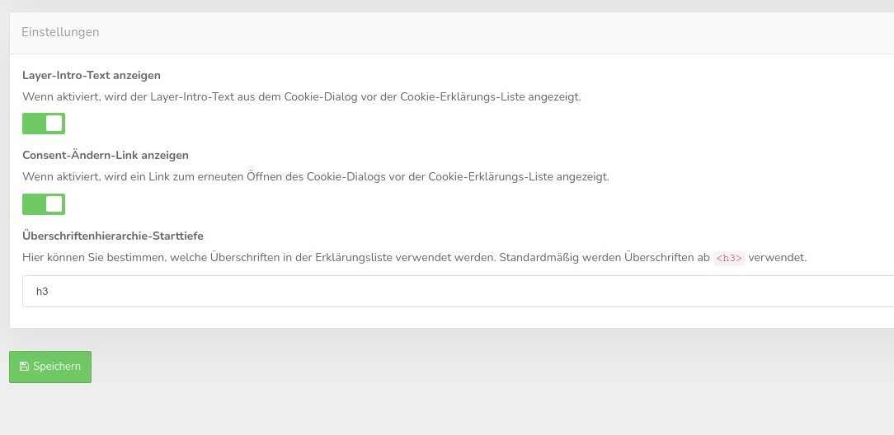

Mit dieser Funktion können Sie die Einbettung einer Cookie Erklärungstabelle in den Content definieren. Diese Tabelle können Sie an beliebiger Stelle auf Ihrer Seite einbinden, es empfiehlt sich natürlich die Seite der Datenschutzeinstellungen und dort der Cookie Bereich.
Verwenden Sie den folgenden Code in Ihrer Datenschutzerklärung oder einer ähnlichen Seite an der Stelle, an der die Liste aller konfigurierten Einbettungen und Cookies erscheinen soll. Der Platzhalter wird mit den Cookie-Erklärungs-Liste gefüllt, sobald CCM19 geladen wurde. Die Anzeigesprache wird automatisch vom Browser des Besuchers ermittelt.
<div class="ccm-cookie-declaration">Bitte aktivieren Sie Javascript, um die Liste aller deklarierten Cookies und ähnlicher Techniken zu sehen.</div>Verwenden Sie den folgenden Code, wenn Sie die Tabelle in einer festen Sprache anzeigen möchten. (Ersetzen Sie dabei de_DE mit einem beliebigen unter Texte & Sprachen konfigurierten und aktivierten Sprachcode):
<div class="ccm-cookie-declaration" data-lang="de_DE">Bitte aktivieren Sie Javascript, um die Liste aller deklarierten Cookies und ähnlicher Techniken zu sehen.</div>Die Liste verwendet das Styling der umschließenden Website. Anpassungen sind durch Verändern der CSS-Stylesheets Ihrer Website oder über Individuelles CSS im Menüpunkt Theme möglich.
Hier können Sie einstellen ob die Standard Texte ausgegeben werden und ob Sie den Consent ändern Link bei der Tabelle anzeigen lassen wollen. Im Selectfeld wählen Sie die Überschriften Hirarchie aus mit der die Daten dargestellt werden damit es gut in Ihre DS passt.
